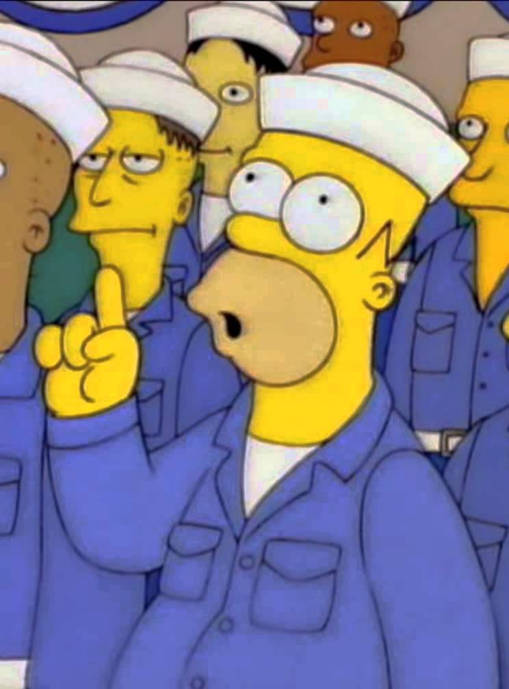

Atomic?
- Object Oriented Design
- Modules, not pages
- Content-out, not layout-in
- Promotes consistency, cohesion and collaboration
- Provides scalability and flexibility
We’re not designing pages, we’re designing systems of components.
— Stephen Hay

Patterns
- Common UI elements are already designed
- Users know how to use them, and even expect them
- Reuse, extend, scale
- Build complex element starting from simple patterns
The Desired Goals
- Build systems designed to be modified and extended
- Generate style guides while designing/coding
- Provide a consistent system of components
- Make collaborative work and maintenance easier
Tiny Bootstraps for every client
— Dave Rupert
Atoms
- Simpliest building blocks
- Abstract
- Generally not useful by themselves
- Base/global style reference
Molecules
- Composed of atoms
- Have a single purpose
- Combine to create more complex systems
Organisms
- Complex molecules
- Self-contained sections with many functionalities
- Standalone, portable, reusable
Templates
- Wireframes
- Page templates
- Groups of organisms
- Adds content hierarchy and purpose
- Client facing
Pages
- Specific instances or variations of a template
- Contains real content, context and meaning
- High fidelity comps
Style Guides
- Component inventory
- Encourages the reuse of symbols
- New components are variations or a fusion of existing components
- Promotes consistency
- Serves as reference
What's Next?
- Start from the content
- Focus on user goals, not visuals
- The canvas can be anything
- See pages as systems of components
- Create style guides while designing
- Keep consistency
- Reuse, extend, scale